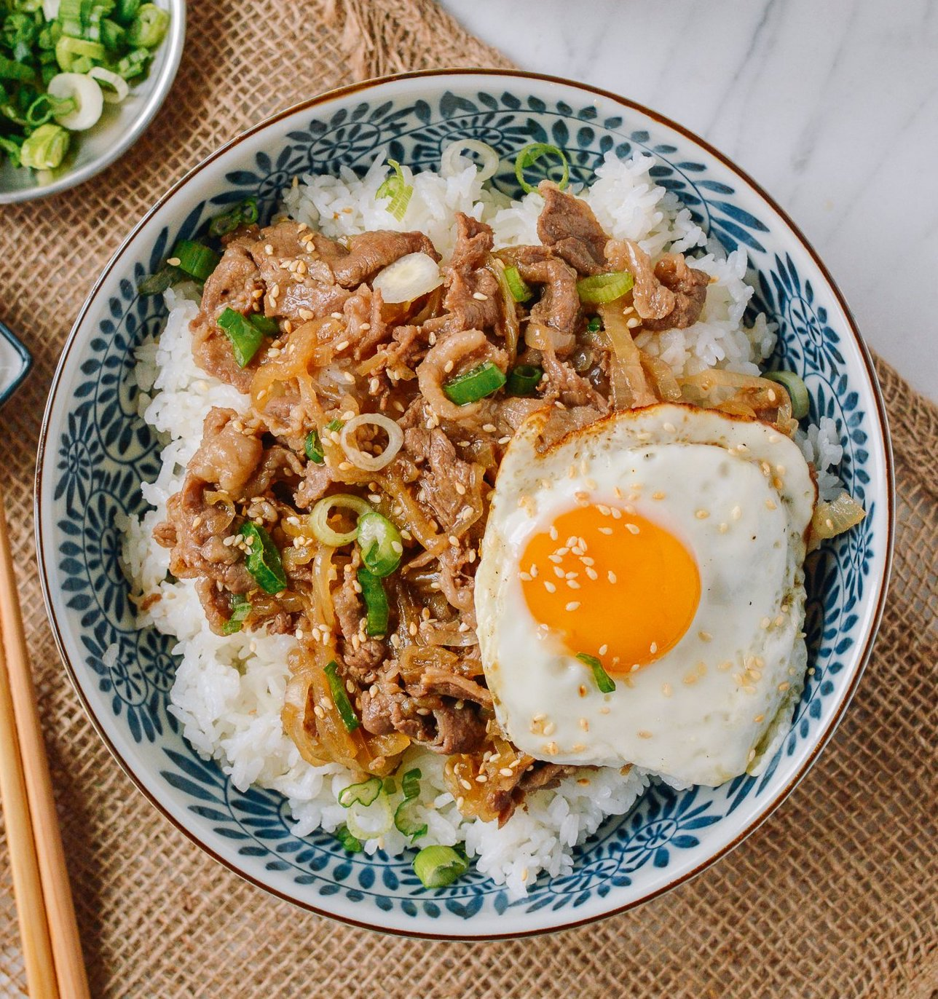

Gyudon

- 1 tablespoon of powdered sugar
- 1 tablespoon of mirin (a Japanese seasoning similar to sake)
- 0.5 onion
- 250 g of thinly sliced parsleyed beef, carpaccio-style
- 1 tablespoon of sake
- 2 tablespoons of soy sauce
- 5 g of dashi (Japanese broth made from bonito and konbu) powder
- 300 g of Japanese round rice (Oryza Sativa Japonica)
- 2 eggs